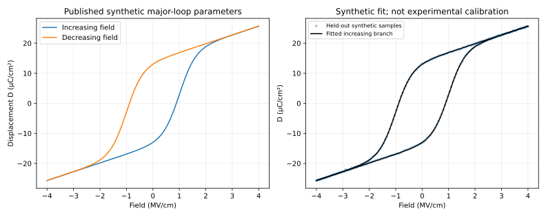

Chapter 3 · Models and inference · 10–14 hours with project
What a polarization loop can identify
Question: can a beautiful fit justify a memory-device prediction?
Follow the instrument before interpreting the curve
Imagine a voltage source connected to a capacitor through a current meter. As the voltage changes, the meter records charge moving through the external wire. Integrating current over time gives transferred charge. Dividing by electrode area converts it to charge per area. The instrument has not directly counted the dipoles inside the film; it has measured a terminal response that several internal processes can produce.
An ordinary capacitor contributes reversible charging. A ferroelectric can add charge associated with a change in polarization. Leakage can contribute actual conduction through the film. Traps can capture or release carriers on the measurement time scale. Separating these contributions is the physical problem behind the symbols below. We call a response hysteretic when it depends on how the present voltage was reached, so an upward and downward sweep need not coincide.
A model parameter is a number within a chosen mathematical description, such as the polarization value approached at a large field. Fitting chooses parameter values to make predictions resemble observations. The difference between predicted and observed values is a residual. Small residuals establish agreement with those observations; they do not prove that only one internal mechanism could have produced them. When distinct parameters or mechanisms remain indistinguishable, the inference lacks identifiability.
Our first task is therefore deliberately limited: reconstruct one published static example with known synthetic inputs. “Static” means the relation does not independently supply transition times. We will calculate what the curve does identify, then ask which additional measurements a time-dependent circuit prediction would require.
Prerequisites: electric field, capacitor charge, basic derivatives, least squares. The required electrostatics is restated below. Objectives: distinguish polarization from terminal charge; derive a branch model; quantify a biased coercive-field extraction; fit synthetic data with held-out samples; expose non-unique fits; and classify a SPICE model's authority.
3.1 The instrument measures charge, not a unique polarization
Let $E$ be the electric field normal to a uniform film, in volts per meter. Let $P$ denote the switchable polarization density, in coulombs per square meter. Polarization is dipole moment per volume; a uniformly polarized slab places opposite bound charges on its two faces. Let $\epsilon_b$ be the relative permittivity of the reversible background and $\epsilon_0$ the vacuum permittivity. The normal electric displacement is
Here $D$ is also a charge density. For an ideal parallel-plate capacitor of area $A$, with negligible fringing and no internal free-charge sheets, the terminal charge is $Q=AD$.
This relation follows by separating the switchable dipoles from the approximately linear background response. Gauss's law equates the normal displacement at the electrode to its free surface-charge density. It does not say that every measured electron represents a reversed ferroelectric dipole. Integrating electrode current also accumulates leakage, injected charge, and offsets unless the measurement removes them.
The source paper calls its areal quantity $Q_{\mathrm{FE}}$. We call it $D$ to preserve $Q$ for total charge. The conversion $1\,\mu\mathrm{C}/\mathrm{cm}^2=0.01\,\mathrm{C}/\mathrm{m}^2$ follows because a square centimeter is $10^{-4}$ square meters. A mistaken conversion produces a hundredfold error before a simulator has taken its first step.
As a concrete teaching example, take $P=0.14\,\mathrm{C}/\mathrm{m}^2$ in a $1\,\mu\mathrm{m}^2$ capacitor. The polarization contribution to terminal charge is $1.4\times10^{-13}$ C. This area is chosen for normalization, not reported as the area of a fabricated source device. At $E=10^8$ V/m and $\epsilon_b=33$, the background term is approximately $0.0292\,\mathrm{C}/\mathrm{m}^2$, large enough to shift a zero crossing materially.
3.2 Reconstructing a saturated major loop
A major loop is a field cycle that reaches sufficiently large positive and negative excursions to reverse the accessible polarization. A minor loop reverses direction before that saturation. A branch equation is a constitutive approximation fitted to the path, not a microscopic proof of domain motion. Wang and colleagues use a shifted hyperbolic tangent with explicit forward and reverse coercive fields. Source: equations 1–4, PDF pp. 2–3.
For the symmetric case, let $P_s$ be the positive saturation magnitude, $P_r$ the positive remanent magnitude at zero field, and $E_c$ the positive coercive-field magnitude of polarization. Require $0\lt P_r\lt P_s$ and $E_c\gt0$. Let $d=+1$ for increasing field and $d=-1$ for decreasing field. With zero polarization offset,
At $E=0$ on the increasing branch, require $P_+(0)=-P_r$. Oddness of the hyperbolic tangent gives $P_r/P_s=\tanh(sE_c)$. Apply $\operatorname{atanh}(u)=\tfrac12\ln[(1+u)/(1-u)]$ to solve for $s$. The argument of the tangent is dimensionless, so $s$ has units m/V. At $E=dE_c$, polarization is zero. At large positive or negative field, the tangent tends to $+1$ or $-1$, giving the saturation limits.
The published Figure 2 uses $P_s=14$ and $P_r=13\,\mu\mathrm{C}/\mathrm{cm}^2$, $E_c=1$ MV/cm, $\epsilon_b=33$, and film thickness $t_f=10$ nm. These are explicitly the paper's simulation parameters. Reconstructing their curve is not calibration against experimental measurements. The model gives $P_+(0)=-0.13$ and $P_-(0)=+0.13\,\mathrm{C}/\mathrm{m}^2$, identities tested by the numerical project.
For asymmetry, replace $dE_c$ by independently specified $E_{c+}$ and $E_{c-}$ and add a vertical offset $P_0$. The published slope then uses $E_{c+}-E_{c-}$ in the denominator. Do not blindly interpret an offset loop's value at zero field as the intrinsic $P_r$; the definition and extracted observable have separated.
A minor-loop construction must remember reversal points. The source scales the saturated branch to $P=mP_{\mathrm{sat}}+b$. Requiring this line to pass through two remembered endpoints $(E_1,P_1)$ and $(E_2,P_2)$ gives $m=(P_1-P_2)/(P_{\mathrm{sat}}(E_1)-P_{\mathrm{sat}}(E_2))$ and $b=P_1-mP_{\mathrm{sat}}(E_1)$. The difficult implementation issue is updating the reversal-point history, not these two algebraic steps. Our main-loop project deliberately does not implement arbitrary nested minor loops.

3.3 Why a charge zero crossing underestimates coercive field
Suppose an analyst reads the increasing-branch zero of $D$ and calls it $E_c$. At the actual polarization coercive field, $P(E_c)=0$ but $D(E_c)=\epsilon_0\epsilon_b E_c\gt0$. At zero applied field, $D(0)=-P_r\lt0$. Since the branch derivative is positive, its unique displacement zero lies strictly between zero and $E_c$.
Near $E_c$, use $\tanh z\simeq z$, yielding $D\simeq P_s s(E-E_c)+\epsilon_0\epsilon_b E$. Set this expression to zero and collect the coefficients of $E$. Both $P_s s$ and $\epsilon_0\epsilon_b$ have units F/m, so their ratio is dimensionless. The estimate tends to $E_c$ when the background response tends to zero.
The exact scalar root for the published synthetic example is 0.886428 MV/cm. The first-order approximation is 0.887589 MV/cm. Reading the displacement zero as the polarization coercive field underestimates it by 11.36%. The source supplement presents a different parameter set with a larger bias; the agreement to check is the mechanism and definitions, not an obligation to reproduce its percentage using different parameters. Source supplement, equations S3–S5.
3.4 A loop area is an energy density, not facility energy
For the uniform capacitor, voltage is $V=t_fE$ and incremental charge is $dQ=A\,dD$. Electrical work over one closed cycle is $W=\oint V\,dQ=A t_f\oint E\,dD$. Integration by parts around the closed curve gives $\oint E\,dD=-\oint D\,dE$. The reversible linear background contributes zero net loop area. With the physical traversal direction, the dissipated work is positive.
For branches separated by $2E_c$ in field and reaching saturation, the limiting enclosed area is $4P_sE_c$. One way to see this is to integrate each tangent using $\int\tanh u\,du=\ln\cosh u$, then take symmetric field limits to infinity. The logarithmic terms cancel except for the branch displacement $2E_c$ on each of two edges. The numerical integral over $\pm4$ MV/cm gives $5.5999\times10^7$ J/m³, within 0.002% of that limit.
Multiplying by the chosen area and thickness gives 0.560 pJ per complete major-loop cycle. This is neither one logical write nor a full memory-access energy. It excludes access transistors, level shifters, voltage generation, line charging, sensing, retries, and computation. Because the constitutive model is rate independent, executing the loop twice as fast changes modeled average power but not loop energy. Actual rate-dependent losses require another model and data.
3.5 A small residual is not an identified physical mechanism
Let $y_i$ be observed displacement at field $E_i$ and branch $d_i$. Let $\theta$ collect the model parameters. A least-squares estimate minimizes $L(\theta)=\sum_{i\in\mathcal T}[D(E_i,d_i;\theta)-y_i]^2$, where $\mathcal T$ is the training sample set. Bounds enforce positive permittivity and coercive magnitude and $P_s\gt P_r\gt0$. The project parameterizes $r=P_r/P_s$ so that bounding $0\lt r\lt1$ enforces the last inequality directly.
The objective is nonlinear; a local least-squares solution is not certified globally optimal. Multiple starting points can reveal instability but cannot prove uniqueness. The source paper's constrained optimizer is also a local method. An excellent fit from several starts is evidence about those starts and that data, not a uniqueness theorem.
Our test adds independent Gaussian noise with standard deviation $0.10\,\mu\mathrm{C}/\mathrm{cm}^2$ and a fixed random seed. Every third sample is withheld. The fit recovers $P_s=14.0093\,\mu\mathrm{C}/\mathrm{cm}^2$, $E_c=0.99937$ MV/cm, and $\epsilon_b=32.9636$; held-out error is 0.10167 µC/cm² RMS. Because the generating family equals the fitting family, this is an algorithm check under favorable assumptions, not a test of model adequacy for a real film.
Local identifiability asks whether different nearby parameter changes can be distinguished by the chosen observations. Define the sensitivity matrix $J_{ij}=\partial D(E_i,d_i;\theta)/\partial\theta_j$. If a nonzero vector $v$ satisfies $Jv=0$, then changing parameters along $v$ leaves the output unchanged to first order. Small singular values of a suitably scaled $J$ indicate weakly observable combinations. The scale is essential: changing a parameter's unit changes the raw singular values.
Restricting measurements to strong positive fields makes $P\simeq P_s+P_0$. Two combinations, $(P_s,P_0)\simeq(13.37,0.66)$ and $(15.17,-1.14)$ in µC/cm², fit the restricted synthetic data with the same RMS error, approximately 0.0873 µC/cm². Their remanence ratios and coercive fields differ sharply. This follows physically because saturation suppresses sensitivity to the switching transition while preserving the sum of saturation and offset. Both fitted curves can be wrong where the data were never taken.
The remedy is experimental design: sample both branches, include the transition, measure multiple pulse widths and temperatures, and vary an operating condition withheld from fitting. A September 2026 Khan-coauthored preprint makes precisely the distinction between a local transfer-curve fit and tests across bias and geometry. Its agent chooses model updates; a proprietary device simulator solves the equations. The reported tests are useful evidence, but an agent's involvement does not remove the inverse problem. Source: tables III–IV and validation sections.
3.6 From constitutive model to circuit: state the boundary
A static branch reconstruction supports comparisons at a prescribed history. It does not give the time required to switch between branches. Retention additionally needs the evolution at low or zero bias, including depolarization, traps, thermal activation, and interfaces. Endurance requires a mechanism or empirical law for changes accumulated during stress. Temperature and device variability each require their own data; none can be inferred just by placing the static equation in SPICE.
For a field-effect transistor, displacement also interacts with the semiconductor and intervening oxide. A trap sheet allows displacement to differ across its interface. The empirical model in Wang's thesis replaces a purely capacitive coupling condition with current continuity including a screening current. That is a materially different problem from our two-terminal capacitor. The thesis gives a 5 nm ZrO₂ p-channel device; using its geometry with the synthetic 10 nm capacitor parameters would create an undocumented hybrid. Thesis, section 3.3.
The delivered circuit demonstrations are therefore classified as illustrative teaching models. One reconstructs the static major-loop relation using its published equation; another introduces an explicitly assumed relaxation law to demonstrate state, sensing, and timestep checks. They are executed SPICE circuits, but neither is an author-provided compact-model reproduction or a calibrated reconstruction of a measured memory cell. The feasibility assessment specifies the missing measurements.
3.7 Reconstruct the measurement before fitting the material
Return to the running capacitor and imagine the actual instrument. It records a voltage waveform and a current waveform, with finite bandwidth, offsets, and a chosen integration window. Let $I_m(t)$ be measured current, $I_0$ an instrumental offset, $I_\ell(t)$ leakage, and $Q(t)$ reversible plus switchable electrode charge. A minimal observation equation is $I_m=dQ/dt+I_\ell+I_0$. Integrating current does not eliminate the nuisance terms: it adds their time integrals to the inferred charge. An apparently closed loop can also depend on a software correction that forces the final charge to equal the initial charge.
If the offset is 1 nA during a 100 µs integration interval, it contributes $10^{-13}$ C. That is comparable to the polarization charge of the 1 µm² teaching capacitor. The comparison is deliberately about scale, not a claim about a particular measurement instrument. A small absolute offset can be a large fraction of the signal from a small device. Report both total charge and normalization area so the reader can audit this conversion.
Area uncertainty creates a multiplicative uncertainty shared by every normalized point. If reported area is too small by ten percent, inferred charge density is too large by about eleven percent. Those errors are correlated across the loop; adding more points does not average them away. Thickness uncertainty similarly affects inferred field when terminal voltage is divided by thickness. In a stack, that division also assumes the voltage is entirely across the layer. The electrostatic budget from Chapter 1 shows why a geometric correction cannot repair a wrong voltage-partition assumption.
Before choosing an optimizer, specify what is observed and what is latent. An observed voltage is not necessarily an observed internal field. Integrated terminal current is not necessarily switchable polarization. A physically informed inverse model includes the observation chain or explicitly limits itself to an effective terminal relation. These two choices can both be useful, but their parameters have different meanings. An effective coercive voltage can support a circuit fit while remaining unsuitable as a microscopic coercive field.
3.8 Turn fit uncertainty into an experimental-design problem
For a locally linear approximation, write the observation vector as $y\simeq f(\theta_*)+J\delta\theta+\varepsilon$. Here $\theta_*$ is a reference parameter vector, $\delta\theta$ its perturbation, $J$ the matrix of derivatives at that reference, and $\varepsilon$ measurement noise. If the noise has zero mean and known positive-definite covariance $\Sigma$, weighted least squares minimizes $(y-f)^T\Sigma^{-1}(y-f)$. Ordinary least squares assumes all noise components have the same variance and are uncorrelated. A long, densely sampled trace rarely justifies that assumption automatically.
Whiten the residual by a matrix $L$ satisfying $L^TL=\Sigma^{-1}$. Then the weighted problem is ordinary least squares on $L(y-f)$. Introduce parameter scales $s_j\gt0$ and dimensionless coordinates $z_j=\delta\theta_j/s_j$. The dimensionless sensitivity matrix is $\widetilde J=LJ\operatorname{diag}(s_j)$. Its singular-value decomposition identifies parameter combinations to which the measurements are strongly or weakly sensitive. This scaling prevents a parameter measured in V/m from appearing artificially less identifiable than the same parameter measured in MV/cm.
If $J$ has full column rank and the local linear model is adequate, the covariance of the least-squares parameter estimate is approximately $(J^T\Sigma^{-1}J)^{-1}$. The inverse appears because estimating a parameter divides the observed noise by sensitivity. A small sensitivity makes the uncertainty large. If two columns nearly coincide, one parameter can compensate for another, and the covariance develops a long direction. Nonlinearity, active bounds, and model error can invalidate a Gaussian approximation, so a covariance matrix is a local diagnostic rather than a universal confidence certificate.
A small example with a hundredfold consequence
Consider a dimensionless observation $y=a x+b+\varepsilon$, with independent noise standard deviation 0.01 and 101 samples. Both $a$ and $b$ are unknown. If all inputs lie between 0.99 and 1.01, the derivative columns $x$ and 1 are almost equal. Moving $a$ up and $b$ down barely changes the predicted data. Spreading the same number of inputs uniformly over −1 to 1 separates the columns. This is the linear analogue of measuring only the positive saturation part of a ferroelectric loop.
The depth laboratory computes both designs using the same noise and parameter units. The clustered design has matrix condition number about 343 and slope standard error 0.17065. The spread design has condition number about 1.715 and slope standard error 0.0017065. The slope uncertainty drops by a factor 100 without collecting more points or changing the optimizer. The improvement comes from asking the system different questions. For a real memory, the allowed input range is constrained by damage and history; informative excitation must also be safe for the specimen.
For the tangent-loop model, transition-region data are sensitive to coercive field and steepness, while large-field slope constrains background permittivity. Positive and negative saturation separate vertical offset from polarization amplitude. Pulse-width sweeps add sensitivity to dynamics, and temperature sweeps can challenge an activation model. These are complementary observations because they change different derivative columns. Sampling a thousand nearly identical saturated points mostly refines the already observable combination.
3.9 A hysteresis model is a state machine as well as an equation
The branch label $d$ is insufficient for arbitrary field histories. Suppose the field rises from negative saturation, reverses before positive saturation, then reverses again. Selecting a saturated decreasing branch at the first reversal can introduce a discontinuous jump in polarization even though the applied field is continuous. The model must remember the reversal location and connect a minor path through the actual state. This is why the source's reversal-point construction matters more than its visually simple hyperbolic tangent.
An ideal Preisach description represents the response as a weighted collection of elementary hysteretic relays. Each relay has an upper switching threshold $\alpha_h$ and lower threshold $\beta_h\le\alpha_h$; its state changes to +1 when the input crosses the upper threshold and to −1 when it crosses the lower threshold. Between thresholds it retains its previous state. A distribution of thresholds can produce a smooth macroscopic loop even though individual relays are binary. These thresholds are separate symbols from the Landau coefficients used in Chapter 2.
In a discretized implementation, store each relay state and update it only when the appropriate crossing occurs. The output is a weighted sum of states plus any reversible background. The state vector, not the present field alone, determines the response. A more compressed reversal-stack implementation exploits additional ideal-model properties, such as return-point memory and erasure of enclosed reversal pairs. Real devices with fatigue, drift, or changing defect populations may violate those properties because the hysteresis operator itself evolves.
The published extraction model and supplement must therefore be read as a package: definitions, endpoint scaling, fitting procedure, and state-history rules determine what the equation predicts. Our delivered static reconstruction does not claim that arbitrary minor loops are implemented. A useful extension would first test continuity at every reversal, restoration after a closed nested excursion, saturation erasure, and sensitivity to field-sampling resolution. It would then compare those ideal properties with measured protocols rather than assuming the device obeys them.
3.10 Add time without violating the energy accounting
A natural dynamic extension starts from a specified free-energy density $f(P)$ and uses overdamped relaxation $\gamma\dot P=-\partial f/\partial P$, with positive damping coefficient $\gamma$. At fixed external conditions, the chain rule gives $df/dt=(\partial f/\partial P)\dot P=-\gamma\dot P^2\le0$. The system relaxes downhill and dissipates energy. This is a useful consistency check: changing the sign would make the state climb its energy landscape and can generate nonphysical behavior while still producing a numerically smooth trace.
With the quartic internal energy $f_0(P)$ and applied internal field $E$, the evolution is $\gamma\dot P=E-f_0'(P)$. Multiplying by $\dot P$ gives $E\dot P=df_0/dt+\gamma\dot P^2$. Electrical work separates into stored-energy change and nonnegative dissipation. On a closed periodic state trajectory, the stored-energy change integrates to zero, so the loop work equals the integrated damping loss under this model. This derivation links a loop integral to dynamics, but the damping coefficient is new information; the static minima did not determine it.
The normalized circuit uses $\tau\dot x=x-x^3+v$, where $x$ is an abstract polarization coordinate and $v$ normalized forcing. Its physical time scale is assigned through $\tau$. Rescaling $\tau$ stretches the same trajectory in time under a correspondingly stretched pulse. A static fit cannot select among those time scales. The circuit's state capacitor is a numerical device used to integrate the equation; its nominal capacitance must not be counted as the physical ferroelectric cell capacitance when reporting energy.
A SPICE waveform also depends on initial conditions and numerical integration. If the symmetric state $x=0$ is initialized exactly at zero forcing, an ideal deterministic solver may remain on the unstable stationary solution unless perturbed. That is not evidence of a stable nonpolar memory. Conversely, forcing a preferred initial condition can hide whether the programming pulse actually reaches it from the opposite state. Simulate both initial polarities and several pulse shapes, then reduce the maximum timestep and compare a separate differential-equation solver. The existing SPICE checks do the latter for the delivered teaching trajectory.
3.11 Validation asks a different question from optimization
A random split of neighboring samples on one smooth loop mostly tests interpolation and noise handling. Entire operating conditions withheld from fitting test a different claim. Fit one pulse width and predict another; fit one drain bias and predict another; fit one channel length and predict another. These tests are harder because model inadequacy can become visible. A test selected after inspecting many failures is no longer a clean held-out test unless that selection history is reported.
The agentic calibration preprint reports transfer across bias and geometry for its specified oxide transistor. That evidence is stronger than a single local fit, while still conditional on the tested structures and proprietary simulator. Its language-model agent orchestrates choices; the physical solver computes device behavior. The scientific contribution should be evaluated through model alternatives, parameter bounds, measured residuals, and prediction tests. Agent involvement changes the workflow, not the standard of physical validation.
A practical model report should separate four error sources: measurement uncertainty, parameter uncertainty within a chosen family, discrepancy between the family and the real device, and numerical solver error. Reducing the last one to machine precision cannot fix the first three. Similarly, a narrow optimizer confidence interval can coexist with a systematically wrong constitutive law. The most valuable plot is often residual versus an omitted condition, such as pulse duration, rather than a single aggregate fit score.
1. Quantify an integration-offset failure
A 0.25 µm² capacitor has a 2 nA unremoved current offset over 20 µs. Convert the resulting error into µC/cm² and compare it with 13 µC/cm² remanence.
Solution. The spurious charge is $4\times10^{-14}$ C. Dividing by $2.5\times10^{-13}$ m² gives 0.16 C/m², or 16 µC/cm². The offset contribution exceeds the nominal remanence. Repeating the same waveform reduces random noise but does not remove a stable offset. Measure the baseline, check the integration window, and investigate whether leakage changes between comparison pulses before interpreting the loop.
2. Why can adding a parameter make held-out prediction worse?
Compare a five-parameter loop fit with a six-parameter fit that adds a field-dependent leakage correction.
Solution. Training residual cannot increase if the old model is contained in the larger model and both are globally optimized, but predictive error can increase. The extra term may absorb noise or compensate for an incorrect field calibration, leaving physical parameters less identifiable. A different sweep rate changes the leakage contribution and exposes that compensation. With local optimization even the training guarantee can fail because the solver may reach a worse local point. Compare residual structure, parameter stability across starts, and withheld protocols rather than selecting solely by training error.
3. Build a decisive minor-loop test
Two implementations match the major loop exactly. One selects branches using only the sign of the field increment. What experiment exposes the missing state?
Solution. Start from negative saturation, rise to an intermediate field, reverse by a small amount, and then return to the reversal field. Record continuity and the path on both legs. A memoryless branch switch generally jumps to the saturated opposite branch and fails continuity. A proper stateful model starts the new path from the actual reversal point. Matching this finite test is necessary but not sufficient for all nested histories; add a nested reversal and a final saturating excursion to test history erasure separately.
3.12 Run and challenge the numerical project
Run the project from the workspace root. It writes the loop CSV, figure, and a result ledger under projects/results. Inputs use SI units at the public model interface; only the fitting coordinates use explicitly named laboratory units for conditioning. The script rejects nonphysical polarization ordering and invalid branch directions.
python -X utf8 projects/polarization.pyDecision variables: saturation, remanence ratio, coercive field, background permittivity, and offset. Objective: training squared residual. Constraints: the numerical bounds in the script, which are teaching ranges rather than process limits. Learner tasks: increase noise, remove a branch, fit only saturated data, change the field span, and compare held-out residuals and parameter spread. A model that violates the input constraints is an infeasible optimum even if its residual is smaller.
3.13 Exercises with complete solutions
4. Dimensional check and signal charge
A capacitor has area 0.25 µm² and switches between $\pm0.13$ C/m². What is the polarization-charge change?
Solution. Area is $0.25\times10^{-12}$ m²; the difference in polarization is $0.26$ C/m². Thus $\Delta Q=6.5\times10^{-14}$ C. Do not multiply again by thickness: polarization already has units of surface charge density. This is the ideal polarization contribution; a circuit's measured current can include other contributions.
5. Prove the sign of the extraction error
Without linearizing the tangent, prove that the increasing-branch displacement zero lies below $E_c$ for this symmetric model.
Solution. $D(0)=-P_r\lt0$, $D(E_c)=\epsilon_0\epsilon_b E_c\gt0$, and $dD/dE=P_s s\operatorname{sech}^2[s(E-E_c)]+\epsilon_0\epsilon_b\gt0$. Continuity gives a zero in $(0,E_c)$ and strict monotonicity makes it unique. The proof fails for negative background permittivity, a different branch definition, or a large offset that changes endpoint signs.
6. Design a measurement that breaks a degeneracy
You know only the positive saturation branch. Explain why separately reporting $P_s$ and $P_0$ is unsafe and propose a remedy.
Solution. In the saturation limit, the constant term is $P_s+P_0$. Replacing $(P_s,P_0)$ by $(P_s+\delta,P_0-\delta)$ leaves it invariant. Measure negative saturation, where the constant term is $-P_s+P_0$. Adding the two constants gives $2P_0$; subtracting gives $2P_s$. Field dependence then constrains the background slope. Unsaturated or asymmetric measurements require the full model rather than this limiting argument.
7. What does a fitted loop fail to predict?
Two devices have the same quasistatic loop but different measured switching times. Is one measurement necessarily wrong?
Solution. No. A relaxation equation $\tau\dot P=P_{\mathrm{eq}}(E)-P$ has the same stationary relation for every positive $\tau$, but different transients. Quasistatic observations cannot determine $\tau$. Pulse-resolved measurements under controlled initial state distinguish the devices. This example establishes non-identifiability; it does not claim that single-time-constant relaxation accurately describes all ferroelectrics.
You can now distinguish a reproducing calculation from a calibrated device prediction, quantify an extraction bias, and design observations that challenge a fit. Those skills are prerequisites for trusting a memory-window or energy claim at any higher level.